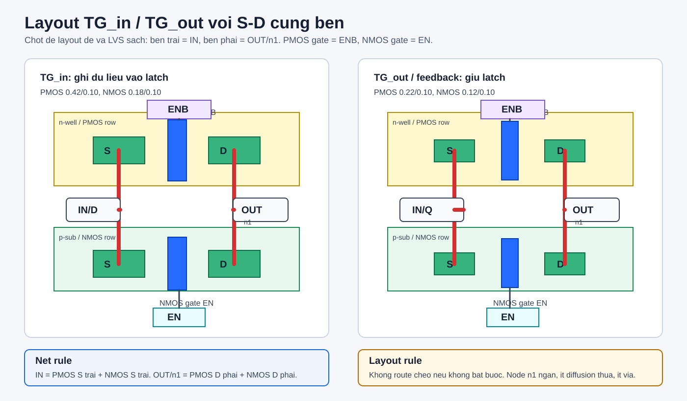
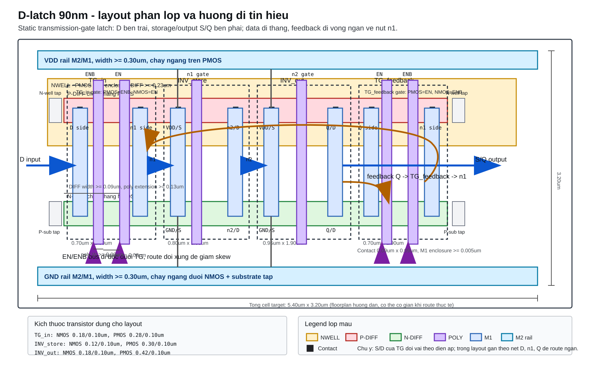
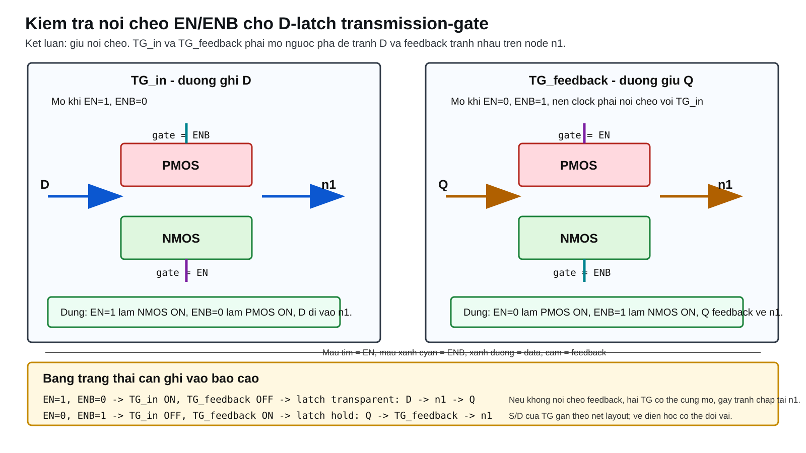
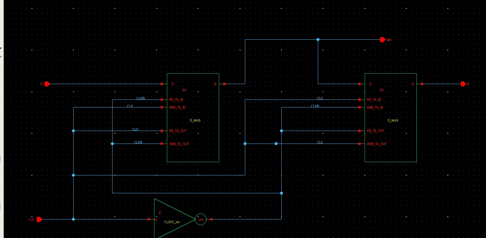

1. Chot thiet ke truoc layout
Phuong an chot: khong buffer giua
Qm va D_slave. Waveform khong buffer dep hon, layout nho hon, ky sinh it hon, delay it hon. Gai nho tren Qm do clock feedthrough la chap nhan duoc neu Q van dung logic.
Sizing cho moi D_latch
| Block | NMOS W/L | PMOS W/L | Ghi chu layout |
|---|---|---|---|
TG_in |
0.18 / 0.10 um |
0.42 / 0.10 um |
Manh hon feedback de ghi du lieu vao latch de hon. |
TG_out / feedback |
0.12 / 0.10 um |
0.22 / 0.10 um |
Nho hon TG_in de giu trang thai nhung tranh tranh chap voi duong ghi. |
INV_store |
0.12 / 0.10 um |
0.30 / 0.10 um |
Inverter noi bo, khong can qua lon. |
INV_out |
0.18 / 0.10 um |
0.42 / 0.10 um |
Tro lai sizing vua phai, khong dung 0.60/0.24 neu module dung chung cho ca 2 latch. |
2. Quy tac pin transmission gate
Luu y quan trong: trong cell
TG_in va TG_out, pin ENB luon noi vao gate PMOS, pin EN luon noi vao gate NMOS. Khi can doi pha, doi tin hieu gan vao pin EN/ENB, khong doi noi trong cell TG.
| Latch | Block | Noi pin EN | Noi pin ENB | Mo khi |
|---|---|---|---|---|
| Master | TG_in |
CLKB |
CLK |
CLK=0 |
| Master | TG_out |
CLK |
CLKB |
CLK=1 |
| Slave | TG_in |
CLK |
CLKB |
CLK=1 |
| Slave | TG_out |
CLKB |
CLK |
CLK=0 |
Trong TG cell: PMOS gate = ENB NMOS gate = EN Khong sua noi noi bo TG khi layout. Chi route CLK/CLKB vao dung pin cua tung TG.
3. Layout tung bo phan: ghi ro S va D
Trong layout MOS,
S va D co the doi vai tuy dien ap lam viec, nhung khi ve cell nen dat co chu dich: source gan rail hoac node on dinh, drain gan node tin hieu can ke tiep. Muc tieu la giam dien tich diffusion cua node dong, giam C ky sinh tren n1, n2, Qm.
Inverter INV_store va INV_out
| Transistor | Source S | Drain D | Gate | Layout nen lam |
|---|---|---|---|---|
| PMOS inverter | VDD |
OUT |
IN |
Dat S sat rail VDD, D quay xuong node output. Co n-well tap gan source. |
| NMOS inverter | GND |
OUT |
IN |
Dat S sat rail GND, D quay len node output. Co substrate tap gan source. |
INV_store: IN = n1 OUT = n2 INV_out: IN = n2 OUT = Q hoac Qm tuy latch
Transmission gate TG_in
| Device | S phia input | D phia node latch | Gate | Layout nen lam |
|---|---|---|---|---|
PMOS 0.42/0.10 |
D hoac Qm vao slave |
n1 |
ENB |
Dat song song NMOS, diffusion phia n1 ngan, khong keo poly/metal dai qua node n1. |
NMOS 0.18/0.10 |
D hoac Qm vao slave |
n1 |
EN |
Noi chung hai drain phia n1 bang metal ngan. Tranh mo rong diffusion n1. |
Transmission gate feedback TG_out
| Device | S phia output | D phia node latch | Gate | Layout nen lam |
|---|---|---|---|---|
PMOS 0.22/0.10 |
Q hoac Qm |
n1 |
ENB |
Dat gan node output va gan n1. Feedback phai ngan, khong vong xa quanh cell. |
NMOS 0.12/0.10 |
Q hoac Qm |
n1 |
EN |
Do TG_out nho hon TG_in, uu tien compact diffusion de C tren n1 nho. |
Quy tac toi uu S/D cho D_latch: source inverter noi rail truc tiep; drain inverter gom thanh node output ngan; S/D cua TG quay theo truc data path; node
n1, n2, Qm khong duoc co diffusion/metal thua. Cang nhieu diffusion tren node noi bo, C ky sinh cang lon, delay va gai clock feedthrough cang de tang.

IN, ben phai la OUT/n1. Cach nay de route, it noi cheo, LVS de sach hon.4. Layout 1 cell D_latch truoc
Thu tu dat block
- Dat rail
VDDtren,GNDduoi. - Dat PMOS row trong n-well, NMOS row trong p-sub.
- Xep block trai sang phai:
TG_in -> INV_store -> INV_out. - Dat
TG_out/ feedback gan phiaQ, route ve noden1. - Giua PMOS/NMOS them tap day du, n-well tap gan VDD, substrate tap gan GND.
Huong node noi bo
D -> TG_in -> n1 -> INV_store -> n2 -> INV_out -> Q Q -> TG_out -> n1 Muc tieu: data path ngan va thang feedback route ngan, khong cat qua data path CLK/CLKB route song song, it skew


5. Ghep thanh D-FF master-slave
Master
Nhan
Nhan
D, cho ra Qm. Master transparent khi CLK=0.
Slave
Nhan
Nhan
Qm, cho ra Q. Slave transparent khi CLK=1.
Clock inverter
Tao
Tao
CLKB tu CLK. Dat gan giua 2 latch de route can bang.
Thu tu layout DFF
- Copy cell
D_latchthanh master va slave. - Dat master ben trai, slave ben phai.
- Route
Qmtu output master sang input slave ngan nhat co the. - Khong chen buffer giua
Qmva slave trong phuong an chot. - Dat
clock_invgan duong clock chung; routeCLKvaCLKBsong song.

6. Route CLK, CLKB, Qm
| Net | Uu tien layout | Can tranh |
|---|---|---|
Qm |
Route ngan, it via, khong chay song song lau voi clock. | Di sat CLK/CLKB qua doan dai vi de bi coupling. |
CLK, CLKB |
Route song song, chieu dai gan bang nhau, vao master/slave ro rang. | De mot net clock dai hon qua nhieu lam skew. |
VDD, GND |
Rail thang, rong, co tap gan transistor. | Rail he, it tap, lam waveform co gai lon hon. |
n1, n2 |
Node noi bo ngan, tranh metal dai. | Keo node noi bo ra xa lam C ky sinh tang. |
Giai thich gai nho tren Qm
Gai nho tai Qm khi clock doi canh la hien tuong clock feedthrough va charge injection cua TG. Neu Qm khong vuot nguong logic sai va Q van sach, khong can them buffer. Neu muon giam nhe, uu tien route clock sach, them tap tot, can bang CLK/CLKB, khong tang transistor qua lon.
7. DRC, LVS, PEX
- DRC cell
TG_in,TG_out,INV_store,INV_out. - LVS tung cell nho truoc.
- DRC/LVS cell
D_latch. - DRC/LVS toan
DFF. - PEX toan DFF, chay lai transient voi testbench cu.
- Do
CLK -> Qtai muc0.6V, do setup/hold neu can bao cao timing.
Sau PEX, gai tren
Qm co the lon hon do C/R ky sinh. Chi sua neu Q sai logic, delay vuot muc, hoac Qm tut qua nguong inverter slave.
8. Checklist nop bai
Checklist layout
- OK PMOS nam trong n-well, NMOS nam trong p-sub.
- OK PMOS source inverter noi VDD, NMOS source noi GND.
- S/D Source gan rail/node on dinh, drain gan node tin hieu ke tiep.
- Cpar Node
n1,n2,Qmngan, it diffusion thua. - TG PMOS gate luon la
ENB, NMOS gate luon laEN. - CLK Master/slave dung nguoc pha.
- Route
Qmngan, khong buffer. - Check DRC/LVS sach truoc khi PEX.
Cau ghi vao bao cao
Thiet ke su dung D-FF master-slave tao tu hai D_latch transmission-gate. Trong moi TG, PMOS gate duoc dieu khien boi ENB, NMOS gate duoc dieu khien boi EN. Master va slave dung hai pha clock nguoc nhau. Node Qm duoc noi truc tiep vao slave de giam so tang logic, giam dien tich va giam ky sinh. Gai nho tai Qm khi clock chuyen canh la do clock feedthrough cua TG va khong lam sai logic ngo ra Q.